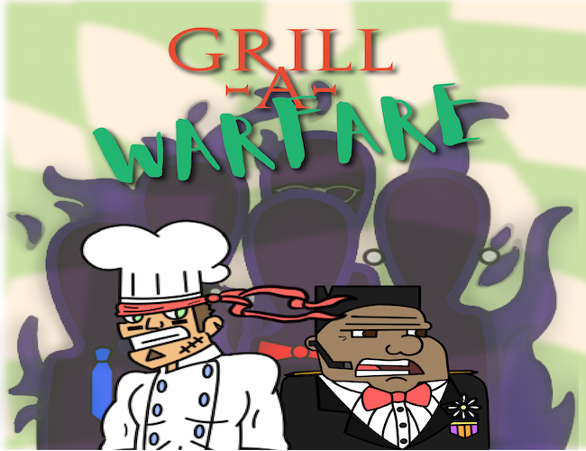

My Works
Below are some of my projects, and you can navigate to other pages using the links at the top.
Project 1: Grill-A-Warfare
A restaurant-themed first-person shooter. Developed by the indie development team LettuceCook Studios.


Trailer:
I was the project manager for this game, as well as providing assistence in development, and prividing UI design and art. As part of being the project manager, I was responsible for scheduling meetings, tracking progress, and ensuring effective communication among team members. I created all socials and posts for the game (Instagram, YouTube, Itch.io).